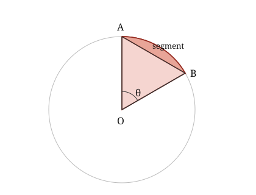

<script src="/assets/redirect.js"></script>
<section class="theory" data-section="P1-4.3">
<h2>4.3 Area of a sector</h2>
<p class="src">Based on Cambridge International AS &amp; A Level Mathematics: Pure Mathematics 1 Coursebook (Sue Pemberton), Chapter 4 Circular measure, pp.107–111 (Key point 4.6, Worked examples 4.5–4.6, and the segment method). Own wording and new numbers. Angles are in radians unless a degree sign is shown.</p>
<p class="key-words"><strong>Key words:</strong> <em>area of a sector</em>, <em>segment</em>, <em>area of a triangle</em></p>
<h3>The formula</h3>
<p>The area of a sector is the same fraction of the area of the circle as the angle \(\theta\) is of a full turn \(2\pi\):</p>
$$\frac{\text{area of sector}}{\pi r^2}=\frac{\theta}{2\pi}\implies\text{area of sector}=\frac12 r^2\theta$$
<p><strong>Key point 4.6:</strong></p>
$$\text{area of sector}=\frac12 r^2\theta$$
<p>Again \(\theta\) must be in radians.</p>
<div class="ms-widget" data-widget="arc-sector" data-mode="segment">
<figure class="ms-widget-fallback"><figcaption>The sector is the “slice” \(AOB\). The minor <strong>segment</strong> is the region between the chord \(AB\) and the arc \(AB\).</figcaption></figure>
</div>
<h3>Area of a segment</h3>
<p>The area of the minor segment is</p>
$$\text{area of sector}-\text{area of triangle}=\frac12 r^2\theta-\frac12 r^2\sin\theta$$
<p>(or \(\dfrac12 r^2(\theta-\sin\theta)\)). The area of a triangle may also be written \(\dfrac12 ab\sin C\) with \(a=b=r\) and \(C=\theta\), and the calculator must be in radian mode.</p>
<div class="worked-example">
<h4>Worked example 1: Sector area in terms of \(\pi\)</h4>
<p class="src">Book: Worked example 4.5, p.107.</p>
<p>Find the area of a sector of a circle with radius \(9\,\mathrm{cm}\) and angle \(\dfrac{\pi}{6}\) radians, in terms of \(\pi\).</p>
<ol class="steps">
<li>Area \(=\dfrac12 r^2\theta=\dfrac12\times 9^2\times\dfrac{\pi}{6}\) <span class="mark">M1</span></li>
<li>\(=\dfrac12\times 81\times\dfrac{\pi}{6}=\dfrac{27\pi}{4}\,\mathrm{cm}^2\) <span class="mark">A1</span></li>
</ol>
<p class="final"><strong>Answer:</strong> \(\dfrac{27\pi}{4}\,\mathrm{cm}^2\)</p>
</div>
<div class="worked-example">
<h4>Worked example 2: Sector, triangle and segment</h4>
<p class="src">Book: Worked example 4.6, pp.107–108.</p>
<p>A circle has radius \(6\,\mathrm{cm}\) and centre \(O\). \(AB\) is a chord and angle \(AOB=1.2\) radians. Find (a) the area of sector \(AOB\), (b) the area of triangle \(AOB\), and (c) the area of the minor segment, giving (b) and (c) to \(3\) significant figures.</p>
<ol class="steps">
<li>(a) \(\dfrac12\times 6^2\times 1.2=21.6\,\mathrm{cm}^2\) <span class="mark">M1 A1</span></li>
<li>(b) \(\dfrac12\times 6\times 6\times\sin 1.2=16.7767\ldots=16.8\,\mathrm{cm}^2\) (3 s.f.) <span class="mark">M1 A1</span></li>
<li>(c) Segment \(=21.6-16.7767\ldots=4.8232\ldots=4.82\,\mathrm{cm}^2\) (3 s.f.) <span class="mark">A1</span></li>
</ol>
<p class="final"><strong>Answer:</strong> (a) \(21.6\,\mathrm{cm}^2\) (b) \(16.8\,\mathrm{cm}^2\) (c) \(4.82\,\mathrm{cm}^2\)</p>
<p class="note">Keep the unrounded triangle area for part (c). Do not subtract \(16.8\) from \(21.6\) and then round.</p>
</div>
<div class="worked-example">
<h4>Worked example 3: Relating area and perimeter</h4>
<p class="src">Book: Key points 4.5 and 4.6 used together; compare 9709/11/M/J/19 Q3 (official MS).</p>
<p>A sector of a circle of radius \(r\,\mathrm{cm}\) has area \(A\,\mathrm{cm}^2\). Express the perimeter of the sector in terms of \(r\) and \(A\).</p>
<ol class="steps">
<li>Use \(A=\dfrac12 r^2\theta\), so \(\theta=\dfrac{2A}{r^2}\) <span class="mark">M1 A1</span></li>
<li>Perimeter \(P=r+r+r\theta\) <span class="mark">B1</span></li>
<li>\(P=2r+r\cdot\dfrac{2A}{r^2}=2r+\dfrac{2A}{r}\) <span class="mark">A1</span></li>
</ol>
<p class="final"><strong>Answer:</strong> \(2r+\dfrac{2A}{r}\)</p>
<p class="note">This exact symbolic form is self-marked.</p>
</div>
<h3>Common mistakes</h3>
<ul>
<li>Using \(\dfrac12 r\theta\) (the factor of \(r\) is missing) or \(r^2\theta\) (the \(\dfrac12\) is missing).</li>
<li>Calculating \(\sin\theta\) with the calculator in degree mode.</li>
<li>Rounding the triangle area to 3 s.f. and then subtracting, which can spoil the segment to 3 s.f.</li>
<li>Giving a segment area when the question asked only for the sector, or the other way around.</li>
</ul>
<h3>Quick checks</h3>
<div class="quick-check">
<h4>Quick check 1</h4>
<p>Find the area of a sector of radius \(9\,\mathrm{cm}\) and angle \(\dfrac{\pi}{6}\) radians, in terms of \(\pi\). Work on paper, then reveal the solution and self-mark; no typed numeric answer is used.</p>
<details><summary>Worked solution</summary>
<ol class="steps">
<li>\(\dfrac12\times 9^2\times\dfrac{\pi}{6}=\dfrac{27\pi}{4}\,\mathrm{cm}^2\) <span class="mark">M1 A1</span></li>
</ol>
<p class="final"><strong>Answer:</strong> \(\dfrac{27\pi}{4}\,\mathrm{cm}^2\)</p>
</details>
</div>
<div class="quick-check">
<h4>Quick check 2</h4>
<p>Find the area of a sector of radius \(6\,\mathrm{cm}\) and angle \(1.2\) radians.</p>
<details><summary>Worked solution</summary>
<ol class="steps">
<li>\(\dfrac12\times 36\times 1.2=21.6\,\mathrm{cm}^2\) <span class="mark">M1 A1</span></li>
</ol>
<p class="final"><strong>Answer:</strong> \(21.6\,\mathrm{cm}^2\)</p>
</details>
</div>
<div class="quick-check">
<h4>Quick check 3</h4>
<p>For a circle of radius \(6\,\mathrm{cm}\) and a chord subtending \(1.2\) radians at the centre, find the area of the minor segment, correct to \(3\) significant figures.</p>
<details><summary>Worked solution</summary>
<ol class="steps">
<li>Sector \(=21.6\). Triangle \(=\dfrac12\times 6\times 6\times\sin 1.2=16.7767\ldots\) <span class="mark">M1</span></li>
<li>Segment \(=21.6-16.7767\ldots=4.82\,\mathrm{cm}^2\) (3 s.f.) <span class="mark">A1</span></li>
</ol>
<p class="final"><strong>Answer:</strong> \(4.82\,\mathrm{cm}^2\)</p>
</details>
</div>
<p class="marks-key"><strong>Marks:</strong> M = method, A = accurate answer (depends on M), B = independent mark. Give exact answers in terms of \(\pi\) when asked (self-mark). Otherwise give areas to 3 s.f., and do not round mid-calculation when a later part depends on the same value.</p>
</section>
